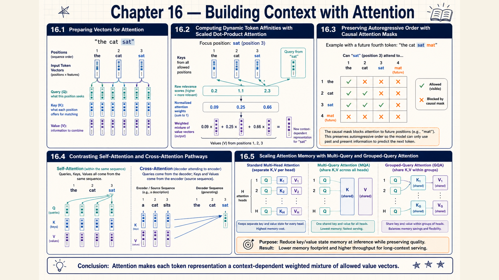
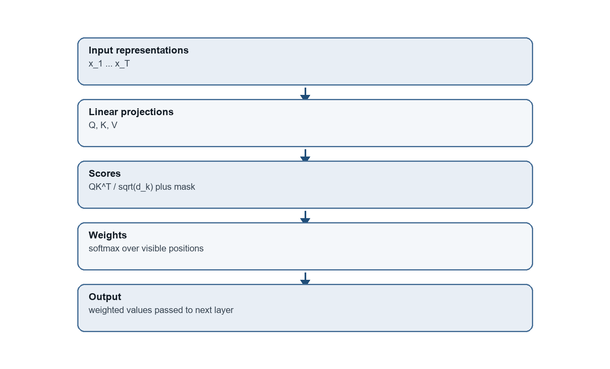
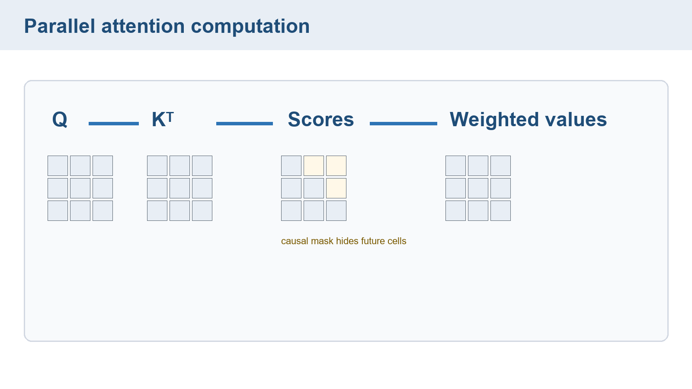
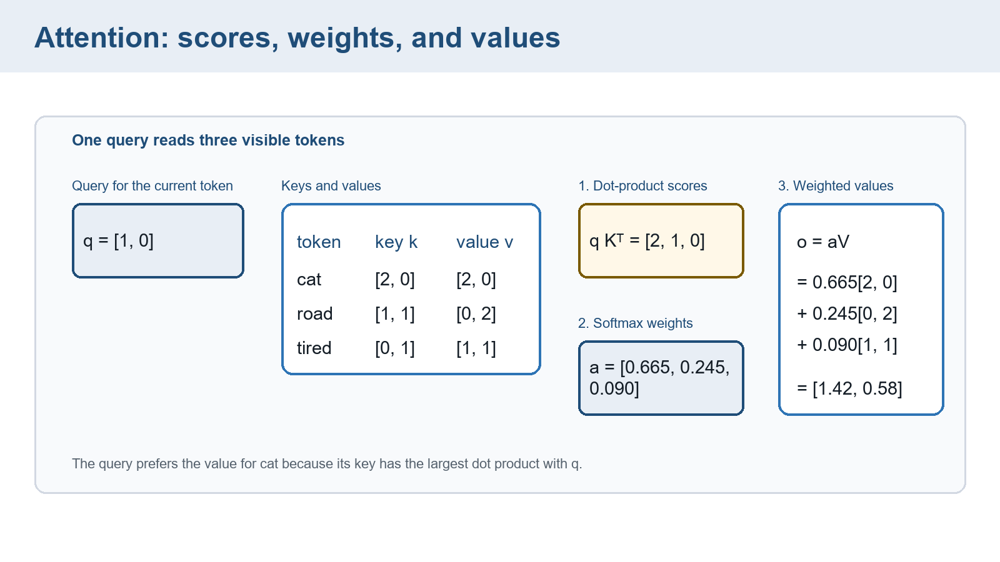

16 Attention Mathematics
Attention lets a position read information directly from selected positions in a sequence. It removes the long serial path of recurrence, but full attention still compares many pairs of positions.
Attention lets one position read a weighted combination of other permitted positions. The chapter builds that computation from query-key scores, a row-wise softmax, a mask, and the value vectors being combined.
In code, torch.matmul, masked_fill, and torch.softmax implement the query-key-value calculation; Matplotlib or Seaborn turns attention matrices into inspectable heatmaps.
Chapter 16 develops one required stage of the guide’s computation.

The numbered panels correspond to the chapter sections and show how each local result supplies the next operation.
16.1 Preparing Vectors for Attention
Attention produces one output vector by taking a weighted sum of value vectors. Queries and keys determine the weights; values provide the information being combined.
- Query: A vector representing what the current position is looking for.
- Key: A vector representing what a source position offers for matching.
- Value: A vector carrying the content to be mixed into the output.
- Attention weight: A normalized coefficient assigned to a value vector.
- Query projection: The learned matrix that maps hidden states into query vectors.
- Key projection: The learned matrix that maps hidden states into key vectors.
- Value projection: The learned matrix that maps hidden states into value vectors.
- Attention matrix: A matrix A with one row per query position and one column per key position; each row contains read weights.
- Attention output: The weighted sum of value vectors produced for one query position.
For each output position, the model compares one query vector with the key vectors at visible source positions. Those comparisons form one score row, with one score for each possible value to read.
Softmax turns the score row into nonnegative weights that sum to one. Multiplying those weights by the value vectors produces a context vector for the query position.
Learned projection matrices create queries, keys, and values from the same input representations. They let the model learn different kinds of comparisons without treating raw token IDs or raw embeddings as the scores themselves.
Queries represent what each token position is asking for.
Queries:
\[ Q=XW_{Q} \tag{16.1}\]
Keys represent what each token position offers for matching.
Keys:
\[ K=XW_{K} \tag{16.2}\]
Values represent the information mixed after attention weights are computed.
Values:
\[ V=XW_{V} \tag{16.3}\]
Attention starts by projecting hidden states into query, key, and value spaces.
QKV projection dimensions:
\[ W_{Q}\in\mathbb{R}^{D\times d_{k}},\quad W_{K}\in\mathbb{R}^{D\times d_{k}},\quad W_{V}\in\mathbb{R}^{D\times d_{v}} \tag{16.4}\]
where D is model hidden width; \(d_{k}\) is query/key width; \(d_{v}\) is value width.
Each token vector of width D is multiplied by a learned projection matrix to create a task-specific attention vector.
The projection matrices are trainable parameters, not temporary attention scores.
Attention scores:
\[ \mathrm{scores}=\frac{QK^{T}}{\sqrt{d_{k}}} \tag{16.5}\]
where Q is query matrix; K is key matrix; \(d_{k}\) is key width.
A query-key dot product measures compatibility; scaling controls its numerical range before softmax.
The score matrix is the input to row-wise attention normalization.
Attention output:
\[ \operatorname{Attention}(Q,K,V)=\operatorname{softmax}(\mathrm{scores})V \tag{16.6}\]
where A is attention weight matrix with rows summing to one; V is value matrix.
Matrix multiplication by V forms a weighted sum of value vectors for every query.
each output vector is an average of visible value vectors weighted by query-key relevance.
Attention produces a read-weight matrix A and an output matrix O from query, key, and value matrices.
Attention objects:
\[ A=\operatorname{softmax}\!\left(\frac{QK^{T}}{\sqrt{d_{k}}}+M\right),\quad O=AV \tag{16.7}\]
where A is attention matrix with dimensions [\(T_{q}\),\(T_{k}\)]; O is context-vector matrix with dimensions [\(T_{q}\),\(d_{v}\)]; M is mask that blocks disallowed reads.
Query-key dot products form one score for every query-key pair. Softmax normalizes each query row, and matrix multiplication with V forms the weighted value sums.
Each row of A sums to one after masking and softmax; O has one output row for each query row.
Example: Computing one query’s scores against two keys
Use query \(q=(1,0)\), keys \(k_{1}=(1,0)\) and \(k_{2}=(0,2)\), and key width \(d_{k}=2\).
Dot products:
\(q^{T} k_{1} = 1\)
\(q^{T} k_{2} = 0\)
Scale by key width:
\(s_{1} = 1 / \sqrt{2} = 0.707\)
\(s_{2} = 0 / \sqrt{2} = 0\)
Score row:
\(S = (0.707,0)\)
The score row has one entry for each key and has not yet been normalized.
Dimensions:
q: [2]
K: [2,2]
S: [2]
The next section applies softmax to this score row and uses the result to combine value vectors.
Queries and keys create a score row; values remain the information that will be combined after those scores are normalized.
16.2 Computing Dynamic Token Affinities with Scaled Dot-Product Attention
Softmax makes attention weights positive and sum to one across the attended positions. The output is a convex mixture of value vectors, so attention acts like differentiable retrieval.
- Scaled dot-product attention: Attention whose dot products are divided by the square root of the query/key dimension before softmax.
- Temperature-like scaling: A scale that controls how sharp or flat a softmax distribution becomes.
- Weighted sum: A sum of value vectors multiplied by attention probabilities.
Dividing by the square root of the query/key dimension prevents dot products from becoming too large as that dimension grows. Without scaling, softmax can saturate and produce tiny gradients for most positions.
A sharp attention distribution behaves like selecting a few positions. A diffuse distribution blends many positions. The model learns which behavior is useful by optimizing the downstream loss.
The softmax direction is part of the definition. In PyTorch, torch.softmax(scores, dim=-1) normalizes across key/source positions for each query row. Using the wrong dimension makes positions compete along the wrong axis.
A heatmap makes the attention matrix readable as a relation between token positions. Rows correspond to queries, columns correspond to keys, and each row sums to one after masking and softmax. Changing one token can change its key, value, and downstream query vectors, so the visible pattern is an output of the learned projections rather than a fixed linguistic rule.
To read an attention heatmap, start with one row rather than the whole square. Choose the output token named by that row, then compare the darkness or numeric weight across its allowed key positions. A large score means the output token pulls more information from that key’s value vector. It does not prove that the model understands grammar or cause and effect.
The same heatmap can look different across heads and layers because each head has its own learned query, key, and value projections. One head may place weight on nearby punctuation, another on a repeated name, and another spread weight across several earlier positions. The final hidden state combines all attention heads and feed-forward layers. One attention row is evidence about one intermediate step, not the full explanation of a generated token.
A useful attention-lab check changes one input token while keeping the remaining token IDs fixed. The changed embedding alters its projected key and value, and it may also alter the query at that position. Comparing the two score matrices, masks, normalized rows, and context vectors identifies which part of the computation changed instead of treating the visualization as a standalone picture.
Dot products become attention weights after scaling, masking, and row-wise softmax.
Scaled dot-product attention:
\[ A=\operatorname{softmax}\!\left(\frac{QK^{T}}{\sqrt{d_{k}}}+M\right) \tag{16.8}\]
where Q is query matrix; K is key matrix; M is additive mask; \(d_{k}\) is key/query width.
Dot products produce match scores, scaling prevents large-dimensional scores from saturating softmax, and the mask removes illegal positions before normalization.
attention is a differentiable weighted lookup over value vectors.
Each output vector is a weighted sum of value vectors.
Attention output:
\[ O=AV \tag{16.9}\]
where A is attention weight matrix with rows summing to one; V is value matrix.
each output vector is an average of visible value vectors weighted by query-key relevance.
Example: Turning two scores into one context vector
Use scaled scores (2,0) and value vectors \(v_{1} = (10,0)\) and \(v_{2} = (0,2)\).
Normalize the scores:
\(a = \operatorname{softmax}(2,0) = (0.881,0.119)\)
The weights are nonnegative and sum to one.
Combine the values:
\(o = 0.881(10,0) + 0.119(0,2)\)
\(o = (8.81,0.238)\)
Dimensions:
a: [2]
V: [2,2]
o: [2]
The output is a weighted read from the two value vectors.
Code example: Scaled dot-product attention and a token-to-token heatmap
import torch.nn as nn
import math
import torch
import torch.nn.functional as F
import matplotlib.pyplot as plt
import seaborn as sns
tokens = ["the", "cat", "sat"]
Q = torch.tensor([[1.0, 0.0], [0.0, 1.0], [1.0, 1.0]])
K = torch.tensor([[1.0, 0.0], [0.0, 1.0], [1.0, 1.0]])
V = torch.tensor([[2.0, 0.0], [0.0, 2.0], [1.0, 1.0]])
scores = Q @ K.T / math.sqrt(Q.shape[-1])
weights = F.softmax(scores, dim=-1)
context = weights @ V
print(weights.sum(dim=-1), context)
sns.heatmap(
weights.numpy(),
xticklabels=tokens,
yticklabels=tokens,
annot=True,
)
plt.xlabel("key position")
plt.ylabel("query position")
plt.tight_layout()Every attention row sums to one and every context row is a weighted combination of value rows.
The hand-selected vectors illustrate the calculation; trained projections determine real model patterns.
Each attention row now describes a weighted read from permitted values. A mask determines which positions may receive weight.
16.3 Preserving Autoregressive Order with Causal Attention Masks
An attention mask marks which key positions each query position may use before the softmax normalization is applied.
- Causal mask: A mask that blocks attention to future positions.
- Padding mask: A mask that blocks padded positions in a batch.
- Bidirectional attention: Attention where positions can see both left and right context.
Causal masking lets all token positions in a training sequence be processed in parallel while preserving the next-token prediction rule. Position t can use tokens before t, but not the target token or future tokens.
Encoder models often use bidirectional attention because their task is understanding a complete input. Decoder models use causal attention because they must generate left to right.
A causal attention mask sets upper-triangular logits to -infinity before softmax, ensuring each position t can only attend to positions <= t.
This preserves the autoregressive factorization \(P(x_1,\ldots,x_T)=\prod_{t=1}^{T} P(x_t\mid x_{<t})\) during parallel training.
A causal mask prevents a position from attending to future tokens.
Causal mask:
\[ M_{i,j}=\begin{cases}-\infty,&j>i,\\0,&\text{otherwise.}\end{cases} \tag{16.10}\]
Masked scores:
\[ \mathrm{scores}_{ij}=-\infty\quad\text{when position }j\text{ is not visible to position }i \tag{16.11}\]
where i is query position; j is key position; M is additive visibility mask.
An illegal position receives negative infinity before softmax, making its normalized weight zero.
The mask changes which positions can contribute without changing the value vectors.
Example: Causal mask
For query position \(i=2\) and key position \(j=4\), we have \(j>i\), so the mask entry is \(-\infty\).
Example: Masked scores
In a causal model, \(i=2\) and \(j=4\) imply \(j>i\), so the masked score is \(-\infty\).
The causal mask preserves the next-token training condition while allowing permitted positions to be processed in parallel.
16.4 Contrasting Self-Attention and Cross-Attention Pathways
Self-attention reads from the same sequence being updated. Cross-attention reads from another source, such as an encoder output, image patches, or retrieved context.
- Self-attention: Q, K, and V are derived from the same sequence.
- Cross-attention: Queries come from one sequence while keys and values come from another.
- Context length: The number of positions available for attention.
Transformer decoders for language modeling mostly use masked self-attention. Encoder-decoder models add cross-attention so generated tokens can attend to an encoded input sequence.
Multimodal models often use cross-attention or projection layers to let text representations use image, audio, or tabular representations.
Self-attention and cross-attention differ in where a position obtains information. Self-attention compares positions within one representation sequence. Cross-attention uses one sequence as queries and another sequence as keys and values, so an output token can read a source sentence, image patches, or retrieved context.
For classification, an encoder lets every permitted token contribute to a contextual sequence representation before a classifier head reads it. For causal generation, a decoder mask limits each token to earlier positions. For translation, an encoder represents the source and a decoder cross-attends to it while producing the target sequence.
Computation map
The computation starts with input representations and produces output through the intermediate objects shown below.

The output of input representations is the input required by output; the intermediate stages name the stored objects that make the transition possible.
Self-attention reads one sequence; cross-attention reads one sequence from another. Both use the same score, normalization, and weighted-value calculation.
16.5 Scaling Attention Memory with Multi-Query and Grouped-Query Attention
Full attention forms one query-key score for every permitted pair of sequence positions, producing quadratic growth in the score matrix.
- Quadratic attention work: The number of query-key pairs grows as the square of sequence length.
- Multi-query attention: Several query heads share one key/value head.
- Grouped-query attention: Groups of query heads share key/value heads, reducing key/value storage while keeping multiple query projections.
Full attention forms one score for every permitted query-key pair. For sequence length T, the score matrix has T rows and T columns, so its memory and pairwise work grow quadratically with T.
Multi-query and grouped-query attention are later implementation variants that reduce the number of stored key/value heads during generation. They are included here to explain a cache-memory trade-off; the core attention calculation remains query-key scoring, row-wise softmax, and weighted values.
The score computation and score storage grow with the number of query-key pairs.
Attention score complexity:
\[ \mathrm{work}_{\mathrm{attention}}=\mathcal{O}(T^{2}d_{k}),\quad \mathrm{memory}_{\mathrm{scores}}=\mathcal{O}(T^{2}) \tag{16.12}\]
where \(T\) is sequence length; \(d_k\) is query/key dimension; \(Q\) and \(K\) are the query and key matrices; and \(\mathrm{memory}_{\mathrm{scores}}\) is storage for score entries when materialized.
Q has T query rows and K has T key rows. Each of the \(T^{2}\) pairs requires a dot product over \(d_{k}\) coordinates, giving O(\(T^{2}\) \(d_{k}\)) arithmetic.
Implementations such as FlashAttention avoid storing the full score matrix but do not change the exact mathematical result.
Example: Attention score complexity
If T doubles from 1,000 to 2,000, the number of query-key pairs grows from 1,000,000 to 4,000,000.
Attention’s main cost is the growing score and cache state over sequence positions. Transformer blocks organize that computation into a trainable layer.
16.6 Attention trace
Attention should be learned as a matrix computation. Each token representation is projected into a query, key, and value. Queries ask what is needed, keys describe what each position offers, and values hold the information that will be mixed. The \(QK^{T}\) matrix contains one score for every query-key pair.
The mask is part of the mathematics, not a later implementation detail. Padding masks remove non-token positions, and causal masks remove future positions. Only after masking does the row-wise softmax turn scores into weights, and those weights form weighted sums of the value vectors.
Attention becomes efficient when all query-key comparisons are packed into a matrix multiplication.

Packing tokens into matrices lets attention compute all query-key scores at once. The tensor trace in the text names the same axes explicitly.
Attention compares a query with available keys, normalizes the resulting scores, and uses them to combine value vectors.

This one-row calculation is repeated for every query position. A mask can set prohibited scores to negative infinity before softmax, so their weights become zero.
Attention computes query-key scores, normalizes them row-wise, and forms weighted sums of values. Q, K, and V are [B,H,T,d_h]; scores are [B,H,T_q,T_k]; output is [B,H,T_q,d_h]. Projected vectors form scores, masks remove invalid positions, softmax normalizes rows, and weights mix values.
In PyTorch, q @ k.transpose(-2,-1), masked_fill, softmax(dim=-1), and attn @ v implement the computation.
Performance note: The score matrix grows as T squared; IO-aware kernels reduce memory traffic for long sequences.
Example: 3-token attention by hand
Tokens: \(T_{1}\)=‘The’, \(T_{2}\)=‘cat’, \(T_{3}\)=‘sat’. Computing output for \(T_{3}\).
Toy Q/K/V vectors:
\(q_3=[1,0,1,0]\); \(k_1=[1,1,0,0]\); \(k_2=[0,1,1,0]\); \(k_3=[1,0,0,1]\).
\(v_1=[1,0,0,1]\); \(v_2=[0,1,0,0]\); \(v_3=[0,0,1,0]\).
Raw scores:
Score for \(T_1\): \(s_{3,1}=1\cdot1+0\cdot1+1\cdot0+0\cdot0=1\).
Score for \(T_2\): \(s_{3,2}=1\cdot0+0\cdot1+1\cdot1+0\cdot0=1\).
Score for \(T_3\): \(s_{3,3}=1\cdot1+0\cdot0+1\cdot0+0\cdot1=1\).
Scale:
Scaled scores: \([0.5,0.5,0.5]\).
Causal mask: \(T_{3}\) can attend to \(T_{1}\), \(T_{2}\), \(T_{3}\) (no future positions here).
If there were a \(T_{4}\), its score would become -inf before softmax.
Softmax of [0.5, 0.5, 0.5]:
\(\exp([0.5,0.5,0.5])=[1.649,1.649,1.649], \sum=4.947\)
The equal scores produce uniform attention weights, \(\alpha=[0.333,0.333,0.333]\).
Attended output: \(o_3=0.333[1,0,0,1]+0.333[0,1,0,0]+0.333[0,0,1,0]\).
\(= [0.333, 0.333, 0.333, 0.333]\)
Now suppose \(q_{3}=[2,0,0,0]\), which is strongly aligned with the first and third keys:
Scores: \(s_{3,1}=2\), \(s_{3,2}=0\), and \(s_{3,3}=2\).
Scaled scores: \([1.0,0.0,1.0]\); attention weights after softmax: \([0.422,0.155,0.422]\).
Output: \(o_3=0.422v_1+0.155v_2+0.422v_3\); positions \(T_1\) and \(T_3\) dominate.
Key calculations
Scaled dot-product attention:
\[ \operatorname{Attention}(Q,K,V)=\operatorname{softmax}\left(\frac{QK^{T}+\operatorname{mask}}{\sqrt{d_k}}\right)V \tag{16.13}\]
Score element:
\[ \operatorname{score}_{i,j}=\frac{q_i\cdot k_j}{\sqrt{d_k}} \tag{16.14}\]
Weighted value:
\[ \operatorname{out}_i=\sum_j\alpha_{i,j}v_j \tag{16.15}\]
Dimension trace
These dimensions appear in the computation in order.
- Q: [B, H, \(T_{q}\), \(D_{h}\)].
- K: [B, H, \(T_{k}\), \(D_{h}\)].
- V: [B, H, \(T_{k}\), \(D_{h}\)].
- Scores: [B, H, \(T_{q}\), \(T_{k}\)].
- Attention output: [B, H, \(T_{q}\), \(D_{h}\)].
PyTorch implementation notes
scores = q @ k.transpose(-2, -1)creates the query-by-key matrix.scores.masked_fill(mask, -inf)must run before softmax.- softmax(scores, \(dim=-1\)) normalizes across source positions for each query.
It should now be clear how to compute a three-token attention row by hand, including a masked future position.
Attention computes scores between queries and keys, normalizes them, and mixes values.
Transformer blocks stack attention with residual, normalization, and feed-forward computation.